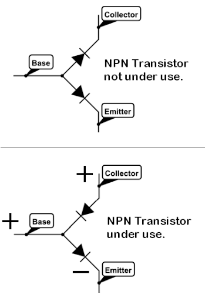

Welcome back!
In this blog, we go back to the basics and try to understand the basic electronic components used in robots. It is going
to be quite simple to understand and is one of the first things you’ll do (or would have done) when starting to work
with electronics. We’ll look at a lot of components, but not go into too much depth about each of them.
And please forgive us if it gives you PTSD from your JEE times.
Before jumping to learn about different electronic components, let’s see how the electronic components are categorized :
Passive Circuit Components
A passive component is an electronic component which can only receive energy, which it can either dissipate, absorb or
store in an electric field or a magnetic field. Passive elements do not need any form of electrical power to
As the name ‘passive’ suggests – passive devices do not provide gain or amplification. Passive components cannot
amplify, oscillate, or generate an electrical signal.
Active Circuit Components
An active component is an electronic component which supplies energy to a circuit.
As you go along, try to figure out which are passive and which are active components.
Basic Electronic Components
Resistor
Ah yes, the resistor. Hasn’t this simple component appeared everywhere since class 10? This little (literally, it is quite small) troublemaker is a two terminal electronic component that limits or regulates the current in a circuit. They can also be used to provide a specific voltage for an active component such as a transistor.
There are two types of resistors - fixed-type resistors and variable resistance resistors.
- Fixed-type resistors are generally used to limit current and voltage.
- Vaariable-resistors are generally used to regulate current and voltage.
Apart from these applications, resistors may also be used in certain contexts where it is necessary to dissipate power or drop voltage as desired by different components in the circuit.
Photo-resistor (Light Dependent Resistor (LDR))
A photo-resistor or Light Dependent Resistor (LDR) or photocell is a resistor whose resistance decreases with increasing incident light intensity. In the dark, a photoresistor can have a resistance as high as several megaohms (MΩ), while in the light, a photoresistor can have a resistance as low as a few hundred ohms.
This certainly looks like magic worthy of Hermione Granger herself, how can we control resistance with available light intensity?
If incident light on a photoresistor exceeds a certain frequency, photons absorbed by the semiconductor give bound electrons enough energy to jump into the conduction band. The resulting free electrons (and their hole partners) conduct electricity, thereby lowering resistance.
These are used in street lamps, to turn on the light only in the evenings (power conservation ftw).
Capacitor
A capacitor is a device for storing electronic charge. It is basically a bank for charge, when it is suddenly asked to take a load of current, it refuses. And when there is sudden reduction in charge, it loans the circuit some charge. It consists of a pair of conductors separated by an insulator. There are two types of capacitors - non-polarized (ceramic) capacitors and polarized (electrolytic) capacitors. Capacitors can be used to block DC voltage, adjust the frequency of an oscillator, generate a time-delay in a circuit, smoothen a DC voltage, etc.
Diode
A diode is an electronic component that permits the flow of current in one direction. It can be used in rectification, i.e., conversion of AC to DC. It can also be used in protection circuits which protect a device from back-emf.
They can be used in wave-shaping circuits. We look at two special classes of diodes in greater detail - Light Emitting Diodes (LED) and Photodiodes.
LED
Undoubtedly, LEDs are one of the most used components among electronics. Whether it be a TV remote or fairy lights on Diwali, virtually nothing can be imagined without the use of LEDs.
An LED works in forward bias, i.e., when the positive terminal of the diode is at a higher electric potential than the negative terminal of the diode. It emits light when connected in a circuit. Note that the shorter lead of the LED is the negative terminal, and the longer lead is the positive terminal. Because we need negativity and more positivity in our lives (sorry for the cheesy philosophy. Maybe we should take the Intro to Philosophy course,huh?) Also, when seen from top, near the negative terminal, the dome of the LED is flat.
The LEDs usually are made to emit single colour, but there are LEDs which can emit multiple colours just by adding a third pin, where we can supply a PWM signal, and LED will throw a corresponding colour.
Controlling the Brightness of LEDs is again quite simple. If the blink program is “Hello World” of Arduino, by the same analogy, controlling the brightness of LED is as simple as adding two numbers. As you might expect, you just need to send a PWM signal to the HIGH pin of LED and Voila! You have the brightness under control.
Fun Fact : Three scientists have jointly earned the 2014 Nobel Prize in physics for their work on blue LEDs, or light-emitting diodes. Why blue in particular? Well, blue was the last - and most difficult - advance required to create white LED light. And with white LED light, companies are able to create smartphone and computer screens, as well as light bulbs that last longer and use less electricity than any bulb invented before.
Photodiode (Photo Detector)
The above image shows a photodetector used in CD ROM drives.
A photodiode operates in reverse bias, i.e., when the negative terminal of the diode is at a higher electric potential than the positive terminal of the diode. When light falls on the PN-junction of the photodiode, it creates an electron hole pair in the depletion layer which causes flow of current. If all this seems Greek-and-Latin to you, you could just remember when light falls on a photodiode, current flows through it. The magnitude of this current depends on the intensity of the light that is incident on the photodiode.
Transistor
A transistor is a semiconductor device used to amplify and switch between multiple electronic signals. A transistor has three terminals, where one terminal can be used to control the flow of current through the other two terminals. There are two types of transistors viz., junction transistors and field-effect transistors. There are two types of junction transistors - n-p-n and p-n-p.
Transistors are used as switches, as amplifiers and in the realization of logic gates. Can you guess whether this is an active or passive source. This might not be obvious as a current or voltage source – transistors are also an active circuit component. This is because transistors are able to amplify the power of a signal.
Logic Gates
As we read in the Physics textbooks of Senior Secondary, a logic gate is an idealized or physical device implementing a Boolean function, that is, it performs a logical operation on one or more logical inputs, and produces a single logical output. Logic gates are primarily implemented in real life, using diodes or transistors acting as electronic switches. The most common logic gates are AND, OR, NOT, NAND, NOR, XOR and XNOR. Each of these is a gate-keeper and if you want to enter the pearly gates of heaven, you’ll have to have certain qualities(more philosophy, or is it Bhagwad Gita this time?)
The output of Logic Gates wrt the inputs can be calculated by the following “truth-table”
Potentiometer
Hmm sounds like something to measure some potential. Well you are somewhat correct. It is essentially a voltage divider used for measuring electric potential (voltage); the component is an implementation of the same principle, hence its name. A potentiometer is a three-terminal resistor with a sliding or rotating contact that forms an adjustable voltage divider. If only two terminals are used, one end and the wiper, it acts as a variable resistor or rheostat.
You have been using potentiometers (unknowingly) in day to day life. For example, the speaker knobs in to control the volume or change the file, also some servos have it to measure the correct angle movements.
A potentiometer returns an analog value to the arduino and can be used to control servo movement, brightness of an led and many more things.
LCD

These are one of the most widely used LCD displays for Arduino projects. They can display alphanumeric characters and contain 2 rows of 16 characters each
The actual method of sending data to this LCD to display is detailed and cumbersome, mostly in the realm of advanced microcontroller programming. However, the LiquidCrystal library lets you display messages in only a couple of lines.
What is a library?
Libraries in general (technical sense) are a collection of objects that can be incorporated into your code whenever required. The Arduino has various libraries built for different components that you might need while designing a circuit. Whenever you need to use a component or a function related to that, you need to use the parent library. The TinkerCAD circuit simulator has a limited list of libraries for components like the LCD, IR remote, Servo motor etc.
How to include library in tinkercad :
Luckily, tinkercad has a very simple user interface and you don’t need to go through much hassle to use a library. To import a library:
- Click on the libraries button on the upper right corner of your code editor:
- Browse list of available libraries, click on LiquidCrystal. This is the name of the library meant for our LCD display.
- Click on the include button to the left of the library's name in the search menu to import the library into your code.
- You may also import a library by adding a #include
to the top of your code.
Hello World, on an LCD
Heat Sink
This is the same thing we used to learn in thermodynamics class. It is a passive heat exchanger that transfers the heat generated by an electronic or a mechanical device to a fluid medium, often air or a liquid coolant, where it is dissipated away from the device, thereby allowing regulation of the device's temperature. In computers, heat sinks are used to cool CPUs, GPUs, and some chipsets and RAM modules. Heat sinks are used with high-power semiconductor devices such as power transistors and optoelectronics such as lasers and light emitting diodes (LEDs), where the heat dissipation ability of the component itself is insufficient to moderate its temperature.
A heat sink is designed to maximize its surface area in contact with the cooling medium surrounding it, such as the air. Air velocity, choice of material, protrusion design and surface treatment are factors that affect the performance of a heat sink. Heat sink attachment methods and thermal interface materials also affect the die temperature of the integrated circuit. Thermal adhesive or grease improve the heat sink's performance by filling air gaps between the heat sink and the heat spreader on the device. A heat sink is usually made out of aluminium or copper.
Buzzers
A buzzer or beeper is an audio signalling device, which may be mechanical, electromechanical, or piezoelectric (piezo for short). Typical uses of buzzers and beepers include alarms, timers, and confirmation of user input such as a mouse click or keystroke.
Fun Fact: in an arduino we can add the frequencies for the buzzer to emit and hence create different notes. Here is an example for the same.
Fuses
A fuse is an electrical safety device that operates to provide overcurrent protection of an electrical circuit. Its essential component is a metal wire or strip that melts when too much current flows through it, thereby stopping or interrupting the current. It is a sacrificial device; once a fuse has operated it is an open circuit, it must be replaced or rewired, depending on type.
Different fuse designs have different current and voltage ratings, breaking capacity and response times. The time and current operating characteristics of fuses are chosen to provide adequate protection without needless interruption. Wiring regulations usually define a maximum fuse current rating for particular circuits. Short circuits, overloading, mismatched loads, or device failure are some of the reasons for fuse operation.
BreadBoards - The way to prototype electronic circuits
Intrduction
So, as we have learnt about the various basic electronic components, it's time to see how to implement them in real projects.
The initial implementations of any idea are always prone to errors like wrong/misplaced connections, bad components, unexpected results due to noise and many other minor optimizations and improvements. And you wouldn’t want to ruin your soon-to-be amazing project due to an avoidable mistake, would you? So, you create an electronic guinea pig, a prototype, before doing anything permanent (no, we do not promote animal testing. This was just an example, please don’t sue us)
A breadboard is one such thing that is used to build and test circuits quickly before finalizing any circuit design. It has many holes into which circuit components like ICs (Integrated Circuits) and resistors can be inserted. It also has strips of metal which run underneath the board and connect the holes on the top of the board. The metal strips are laid out as shown below.
Note that the left and right column of holes are connected vertically while the remaining holes are connected horizontally (yes, this confused us all in the beginning).
To use a breadboard, the legs of components are placed in the holes. Each set of holes connected by a metal strip underneath forms a node. A node is a point in a circuit where two components are connected. Connections between different components are formed by putting their legs in a common node. The long left and right columns of holes are usually used for power supply connections. The rest of the circuit is built by placing components and connecting them together with jumper wires. ICs are placed in the middle of the board so that half of the legs are on one side of the middle line and half on the other.
Breadboarding Tips
It is important to breadboard a circuit neatly and systematically, so that one can debug it and get it running easily and quickly. It also helps when someone else needs to understand and inspect the circuit. Here are some tips that might help you in future.
- Always use the side-lines for power supply connections. Power the chips from the sidelines and not directly from the power supply.
- Use black wires for ground connections (0 V), and red for other power connections. Easy to remember this - red equals danger and black, well, it looks good with red
- Keep the jumper wires on the board flat, so that the board does not look cluttered (this isn’t your hostel room)
- Route jumper wires around the chips and not over the chips. This makes changing the chips when needed easier.
- You could trim the legs of components like resistors, transistors and LEDs, so that they fit in snugly and do not get pulled out by accident.
And that’s the end of this blog. Thanks for sticking with us so far. See you in the next blog!